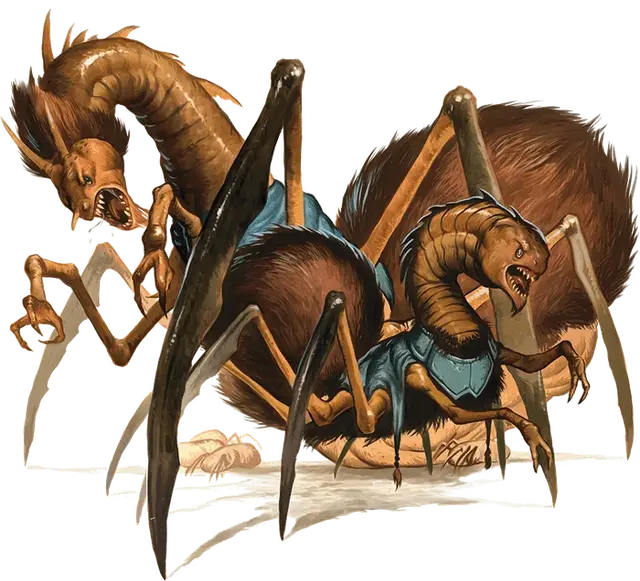

Личинка неоги
Neogi Hatchling
Крошечная Аберрация, обычно законно-злая

Класс Доспеха 11
Хиты 7 (3к4)
Скорость 20 футов, лазая 20 футов
| мод | спас | ||
|---|---|---|---|
| СИЛ | 3 | −4 | −4 |
| ЛОВ | 13 | +1 | +1 |
| ТЕЛ | 10 | +0 | +0 |
| мод | спас | ||
|---|---|---|---|
| ИНТ | 6 | −2 | −2 |
| МДР | 10 | +0 | +0 |
| ХАР | 9 | −1 | −1 |
Чувства тёмное зрение 60 футов, пассивное Восприятие 10
Опасность 1/8 (25 опыта)
Бонус мастерства +2
Среда обитания Подземье, Холмы
Особенности
Ментальная стойкость. Личинка имеет преимущество на спасброски от очарования и испуга, и личинку нельзя усыпить магически.
Паучья ходьба. Личинка может взбираться по сложным поверхностям, включая вверх ногами по потолку, без необходимости проходить проверки.
Действия
Укус. . Рукопашная атака оружием: +3 к попаданию, досягаемость 5 футов, одна цель. Попадание: 3 (1к4+ 1) колющего урона плюс 3 (1к6) урона ядом и цель должна преуспеть в спасброске Телосложения Сл 10 или стать отравленной на 1 минуту. Цель может повторять спасбросок в конце каждого своего хода, оканчивая на себе эффект в случае успеха.
Описание
“Только злобные или отчаявшиеся имеют дело с неоги. Я обычно не советую работать с существами, которые рассматривают вас как собственность или добычу”.
— Морденкайнен
Неоги похож на огромного паука с шеей и головой угря. Он может отравлять тело и разум своих жертв и может подчинять себе даже существ, которые физически превосходят его.
Неоги обычно обитают в отдаленных местах Материального плана, а также на Астральном плане и Эфирном плане. Они давным-давно покинули свой родной мир, чтобы завоевывать и пожирать существ иных миров. В эту эпоху они ассимилировали бурых увальней [umber hulk] и использовали их для создания изящных, похожих на пауков кораблей, способных пересекать мультивселенную.
Личинка неоги
Неоги живут около 100 лет. Когда индивид сильно ослабевает из–за возраста, другие неоги в группе подавляют его и вводят ему особый яд. Токсин превращает старого неоги в раздутую, беспомощную массу плоти, которая называется великий старый хозяин. Молодые неоги откладывают на него яйца и когда появляется потомство, они пожирают великого старого хозяина и друг друга, пока лишь несколько сильнейших не останется. Выжившие детеныши неоги начинают свою жизнь под контролем взрослого неоги. Они изучают общество и зарабатывают место в нем, и каждый начинает свою подготовку с получения в подчинение молодого бурого увальня.